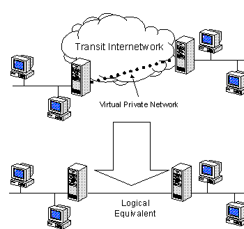
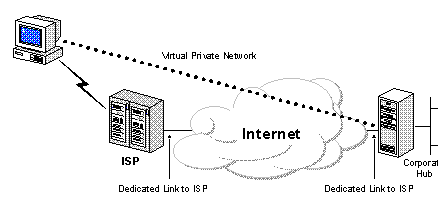
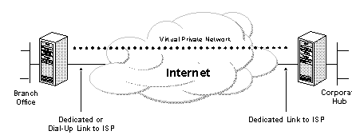
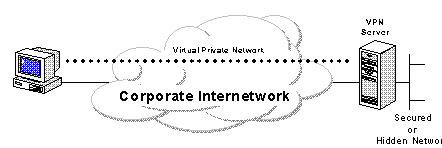
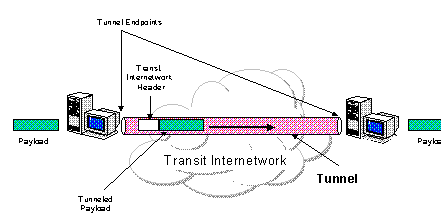
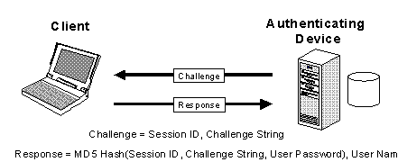
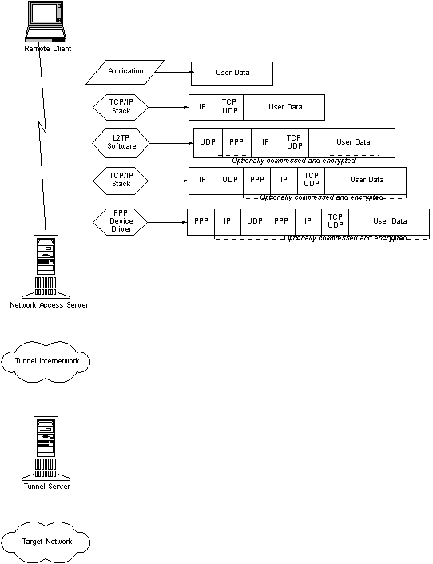
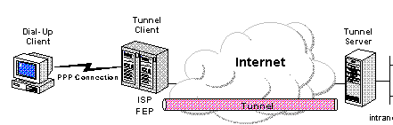

|
| ||
|
| ||
Microsoft Corporation
May 29, 1998
Posted June 25, 1998
Contents
Introduction
Common Uses of VPNs
Basic VPN Requirements
Tunneling Basics
Tunneling Protocols
Point-to-Point Protocol (PPP)
Point-to-Point Tunneling Protocol (PPTP)
Layer 2 Forwarding (L2F)
Layer 2 Tunneling Protocol (L2TP)
Internet Protocol Security (IPSec) Tunnel Mode
Tunnel Types
Advanced Security Features
Symmetric Encryption vs. Asymmetric Encryption
(Private Key vs. Public Key)
Certificates
Extensible Authentication Protocol (EAP)
IP Security (IPSec)
User Administration
Support in RAS
Scalability
RADIUS
Accounting, Auditing, and Alarming
Conclusion
For More Information
This white paper provides an overview of virtual private networks (VPNs), describes their basic requirements, and discusses some of the key technologies that permit private networking over public internetworks. This document also addresses the native support for virtual private networking available in Windows NT Server.
A Virtual Private Network (VPN) connects the components and resources of one network over another network. VPNs accomplish this by allowing the user to tunnel through the Internet or another public network in a manner that lets the tunnel participants enjoy the same security and features formerly available only in private networks (see Figure 1).

Figure 1. Virtual Private Network
VPNs allow telecommuters, remote employees like salespeople, or even branch offices to connect in a secure fashion to a corporate server located at the edge of the corporate Local Area Network (LAN) using the routing infrastructure provided by a public internetwork (such as the Internet). From the user's perspective, the VPN is a point-to-point connection between the user's computer and a corporate server. The nature of the intermediate internetwork is irrelevant to the user because it appears as if the data is being sent over a dedicated private link.
As mentioned, VPN technology also allows a corporation to connect to branch offices or to other companies (Extranets) over a public internetwork (such as the Internet), while maintaining secure communications. The VPN connection across the Internet logically operates as a Wide Area Network link between the sites.
In both of these cases, the secure connection across the internetwork appears to the user as a private network communication -- despite the fact that this communication occurs over a public internetwork -- hence the name Virtual Private Network.
VPN technology is designed to address issues surrounding the current business trend toward increased telecommuting, widely distributed global operations, and highly interdependent partner operations, where workers must be able to connect to central resources, communicate with each other, and businesses need to efficiently manage inventories for just-in-time production.
To provide employees with the ability to connect to corporate computing resources regardless of their location, a corporation must deploy a reliable and scalable remote access solution. Typically, corporations choose
Neither of these solutions provides the optimum reliability or scalability in terms of cost, reliability, flexible administration and management, and demand for connections. Therefore, it makes sense to find a middle ground where the organization either supplements or replaces their current investments in modem pools and their private network infrastructure with a less expensive solution based on Internet technology. In this manner business can focus on its core competencies with the assurance that accessibility will never be compromised, and that the most economical solution is deployed. The availability of an Internet solution enables a few Internet connections (via Independent Service Providers, or ISPs) and deployment of several edge of network VPN server computers to serve the remote networking needs of hundreds or even thousands of remote clients and branch offices, as describe next.
The next few subsections describe in more detail common VPN situations.
VPNs provide remote access to corporate resources over the public Internet, while maintaining privacy of information. Figure 2 shows a VPN used to connect a remote user to a corporate intranet.

Figure 2. Using a VPN to connect a remote client to a private LAN
Rather than making a leased line, long distance (or 1-800) call to a corporate or outsourced Network Access Server (NAS), the user first calls a local ISP NAS phone number. Using the local connection to the ISP, the VPN software creates a virtual private network between the dial-up user and the corporate VPN server across the Internet.
There are two methods for using VPNs to connect local area networks at remote sites:

Figure 3. Using a VPN to connect two remote sites
Note that in both cases, the facilities that connect the branch office and corporate offices to the Internet are local. Both client-server, and server-server VPN cost savings are largely predicated upon the use of a local access phone number to make a connection. It is recommended that the corporate hub router that acts as a VPN server be connected to a local ISP with a dedicated line. This VPN server must be listening 24 hours per day for incoming VPN traffic.
In some corporate internetworks, the departmental data is so sensitive that the department's LAN is physically disconnected from the rest of the corporate internetwork. While this protects the department's confidential information, it creates information accessibility problems for those users not physically connected to the separate LAN.

Figure 4. Using a VPN to connect to two computers on the same LAN
VPNs allow the department's LAN to be physically connected to the corporate internetwork but separated by a VPN server. Note that the VPN server is NOT acting as a router between the corporate internetwork and the department LAN. A router would interconnect the two networks, allowing everyone access to the sensitive LAN. By using a VPN, the network administrator can ensure that only those users on the corporate internetwork who have appropriate credentials (based on a need-to-know policy within the company) can establish a VPN with the VPN server and gain access to the protected resources of the department. Additionally, all communication across the VPN can be encrypted for data confidentiality. Those users who do not have the proper credentials cannot view the department LAN.
Typically, when deploying a remote networking solution, an enterprise desires to facilitate controlled access to corporate resources and information. The solution must allow freedom for authorized remote clients to easily connect to corporate local area network (LAN) resources, and the solution must also allow remote offices to connect to each other to share resources and information (LAN-to-LAN connections). Finally, the solution must ensure the privacy and integrity of data as it traverses the public Internet. The same concerns apply in the case of sensitive data traversing a corporate internetwork.
Therefore, at a minimum, a VPN solution should provide all of the following:
An Internet VPN solution based on the Point-to-Point Tunneling Protocol (PPTP) or Layer 2 Tunneling Protocol (L2TP) meets all of these basic requirements, and takes advantage of the broad availability of the worldwide Internet. Other solutions, including the new IP Security Protocol (IPSec), meet some of these requirements, but remain useful for specific situations.
The remainder of this paper discusses VPN concepts, protocols, and components in greater detail.
Tunneling is a method of using an internetwork infrastructure to transfer data from one network over another network. The data to be transferred (or payload) can be the frames (or packets) of another protocol. Instead of sending a frame as it is produced by the originating node, the tunneling protocol encapsulates the frame in an additional header. The additional header provides routing information so that the encapsulated payload can traverse the intermediate internetwork.
The encapsulated packets are then routed between tunnel endpoints over the internetwork. The logical path through which the encapsulated packets travel through the internetwork is called a tunnel. Once the encapsulated frames reach their destination on the internetwork, the frame is unencapsulated and forwarded to its final destination. Note that tunneling includes this entire process (encapsulation, transmission, and unencapsulation of packets).

Figure 5. Tunneling
Note that the transit internetwork can be any internetwork -- the Internet is a public internetwork and is the most widely known real world example. There are many examples of tunnels that are carried over corporate internetworks. And while the Internet provides one of the most pervasive and cost-effective internetworks, references to the Internet in this paper can be replaced by references to any other public or private internetwork that acts as a transit internetwork.
Tunneling technologies have been in existence for some time. Some examples of mature technologies include:
In addition, new tunneling technologies have been introduced in recent years. These newer technologies -- which are the primary focus of this paper -- include:
For a tunnel to be established, both the tunnel client and the tunnel server must be using the same tunneling protocol.
Tunneling technology can be based on either a Layer 2 or Layer 3 tunneling protocol. These layers correspond to the Open Systems Interconnection (OSI) Reference Model. Layer 2 protocols correspond to the Data Link layer, and use frames as their unit of exchange. PPTP and L2TP and Layer 2 Forwarding (L2F) are Layer 2 tunneling protocols; both encapsulate the payload in a Point-to-Point Protocol (PPP) frame to be sent across an internetwork. Layer 3 protocols correspond to the Network layer, and use packets. IP over IP and IP Security (IPSec) Tunnel Mode are examples of Layer 3 tunneling protocols. These protocols encapsulate IP packets in an additional IP header before sending them across an IP internetwork.
For Layer 2 tunneling technologies such as PPTP and L2TP, a tunnel is similar to a session; both of the tunnel endpoints must agree to the tunnel and must negotiate configuration variables, such as address assignment or encryption or compression parameters. In most cases, data transferred across the tunnel is sent using a datagram-based protocol. A tunnel maintenance protocol is used as the mechanism to manage the tunnel.
Layer 3 tunneling technologies generally assume that all of the configuration issues have been handled out of band, often by manual processes. For these protocols, there may be no tunnel maintenance phase. For Layer 2 protocols (PPTP and L2TP), however, a tunnel must be created, maintained, and then terminated.
Once the tunnel is established, tunneled data can be sent. The tunnel client or server uses a tunnel data transfer protocol to prepare the data for transfer. For example, when the tunnel client sends a payload to the tunnel server, the tunnel client first appends a tunnel data transfer protocol header to the payload. The client then sends the resulting encapsulated payload across the internetwork, which routes it to the tunnel server. The tunnel server accepts the packets, removes the tunnel data transfer protocol header, and forwards the payload to the target network. Information sent between the tunnel server and the tunnel client behaves similarly.
Because they are based on the well-defined PPP protocol, Layer 2 protocols (such as PPTP and L2TP) inherit a suite of useful features. These features and their Layer 3 counterparts address the basic VPN requirements as outlined below.
Because the Layer 2 protocols depend heavily on the features originally specified for PPP, it is worth examining this protocol more closely. PPP was designed to send data across dial-up or dedicated point-to-point connections. PPP encapsulates IP, IPX, and NetBEUI packets within PPP frames, and then transmits the PPP-encapsulated packets across a point-to-point link. PPP is used between a dial-up client and a NAS.
There are four distinct phases of negotiation in a PPP dial-up session. Each of these four phases must complete successfully before the PPP connection is ready to transfer user data. These phases are explained next.
PPP uses Link Control Protocol (LCP) to establish, maintain, and end the physical connection. During the initial LCP phase, basic communication options are selected. Note that during the link establishment phase (Phase 1), authentication protocols are selected, but they are not actually implemented until the connection authentication phase (Phase 2). Similarly, during LCP a decision is made as to whether the two peers will negotiate the use of compression and/or encryption. The actual choice of compression/encryption algorithms and other details occurs during Phase 4.
In the second phase, the client PC presents the user's credentials to the remote access server. A secure authentication scheme provides protection against replay attacks and remote client impersonation. (A replay attack occurs when a third party monitors a successful connection and uses captured packets to play back the remote client's response so that it can gain an authenticated connection. Remote client impersonation occurs when a third party takes over an authenticated connection. The intruder waits until the connection has been authenticated and then traps the conversation parameters, disconnects the authenticated user, and takes control of the authenticated connection.)
Most implementations of PPP provide limited authentication methods, typically Password Authentication Protocol (PAP), Challenge Handshake Authentication Protocol (CHAP), and Microsoft Challenge Handshake Authentication Protocol (MSCHAP).

Figure 6. The CHAP Process
CHAP is an improvement over PAP in that the clear text password is not sent over the link. Instead, the password is used to create an encrypted hash from the original challenge. The server knows the client's clear text password, and can therefore replicate the operation and compare the result to the password sent in the client's response. CHAP protects against replay attacks by using an arbitrary challenge string for each authentication attempt. CHAP protects against remote client impersonation by unpredictably sending repeated challenges to the remote client throughout the duration of the connection.
During Phase 2 of PPP link configuration, the NAS collects the authentication data and then validates the data against its own user database or against a central authentication database server, such as one maintained by a Windows NT Primary Domain Controller (PDC) or a Remote Authentication Dial-In User Service (RADIUS) server.
Microsoft's implementation of PPP includes an optional Callback Control Phase. This phase uses the Callback Control Protocol (CBCP) immediately after the authentication phase. If configured for callback, after authentication, both the remote client and NAS disconnect. The NAS then calls the remote client back at a specified phone number. This provides an additional level of security to dial-up networking. The NAS will allow connections from remote clients physically residing at specific phone numbers only.
Once the previous phases have been completed, PPP invokes the various Network Control Protocols (NCPs) that were selected during the link establishment phase (Phase 1) to configure protocols used by the remote client. For example, during this phase the IP Control Protocol (IPCP) can assign a dynamic address to the dial-in user. In Microsoft's implementation of PPP, the compression control protocol is used to negotiate both data compression (using MPPC) and data encryption (using MPPE) for the simple reason that both are implemented in the same routine.
Once the four phases of negotiation have been completed, PPP begins to forward data to and from the two peers. Each transmitted data packet is wrapped in a PPP header which is removed by the receiving system. If data compression was selected in phase 1 and negotiated in phase 4, data will be compressed before transmission. If data encryption were similarly selected and negotiated, the data (optionally compressed) will be encrypted before transmission.
PPTP is a Layer 2 protocol that encapsulates PPP frames in IP datagrams for transmission over an IP internetwork, such as the Internet. PPTP can also be used in private LAN-to-LAN networking.
PPTP is documented in the draft RFC, "Point-to-Point Tunneling Protocol" (pptp-draft-ietf - ppext - pptp - 02.txt). This draft was submitted to the IETF in June, 1996 by the member companies of the PPTP Forum, including Microsoft Corporation, Ascend Communications, 3Com/Primary Access, ECI Telematics, and US Robotics (now 3Com).
Note: Internet draft documents should be considered works in progress. See http://www.ietf.org  for copies of Internet drafts.
for copies of Internet drafts.
The Point-to-Point Tunneling Protocol (PPTP) uses a TCP connection for tunnel maintenance and Generic Routing Encapsulation (GRE) encapsulated PPP frames for tunneled data. The payloads of the encapsulated PPP frames can be encrypted and/or compressed. Figure 7 shows how a PPTP packet is assembled prior to transmission. The drawing shows a dial-up client creating a tunnel across an internetwork. The final frame layout shows the encapsulation for a dial-up client (PPP Device Driver).
L2F, a technology proposed by Cisco, is a transmission protocol that allows dial-up access servers to frame dial-up traffic in PPP and transmit it over WAN links to an L2F server (a router). The L2F server then unwraps the packets and injects them into the network. Unlike PPTP and L2TP, L2F has no defined client. Note that L2F functions in compulsory tunnels only. (For a detailed discussion of voluntary and compulsory tunnels, see the section, "Tunnel Types," later in this document.)
L2TP is a combination of PPTP and L2F. Its designers hope that L2TP will represent the best features of PPTP and L2F.
L2TP is a network protocol that encapsulates PPP frames to be sent over IP, X.25, Frame Relay, or Asynchronous Transfer Mode (ATM) networks. When configured to use IP as its datagram transport, L2TP can be used as a tunneling protocol over the Internet. L2TP can also be used directly over various WAN media (such as Frame Relay) without an IP transport layer.
L2TP is documented in the draft RFC, Layer 2 Tunneling Protocol "L2TP" (draft-ietf-pppext-l2tp-09.txt). This document was submitted to the IETF in January 1998.
Note: Internet draft documents should be considered works in progress. See http://www.ietf.org  for copies of Internet drafts.
for copies of Internet drafts.
L2TP over IP internetworks uses UDP and a series of L2TP messages for tunnel maintenance. L2TP also uses UDP to send L2TP-encapsulated PPP frames as the tunneled data. The payloads of encapsulated PPP frames can be encrypted and/or compressed. Figure 8 shows how an L2TP packet is assembled prior to transmission. The drawing shows a dial-up client creating a tunnel across an internetwork. The final frame layout shows the encapsulation for a dial-up client (PPP Device Driver). The encapsulation assumes L2TP over IP.

Figure 8. Construction of an L2TP Packet
Both PPTP and L2TP use PPP to provide an initial envelope for the data, and then append additional headers for transport through the internetwork. The two protocols are very similar. However, there are differences between PPTP and L2TP:
IPSec is a Layer 3 protocol standard that supports the secured transfer of information across an IP internetwork. IPSec as a whole is more fully described in the Advanced Security section below. However, one aspect of IPSec should be discussed in the context of tunneling protocols. In addition to its definition of encryption mechanisms for IP traffic, IPSec defines the packet format for an IP over IP tunnel mode, generally referred to as IPSec Tunnel Mode. An IPSec tunnel consists of a tunnel client and tunnel server, which are both configured to use IPSec tunneling and a negotiated encryption mechanism.
IPSec Tunnel Mode uses the negotiated security method (if any) to encapsulate and encrypt entire IP packets for secure transfer across a private or public IP internetwork. The encrypted payload is then encapsulated again with a plaintext IP header, and sent on the internetwork for delivery to the tunnel server. Upon receipt of the this datagram, the tunnel server processes and discards the plaintext IP header and then decrypts its contents to retrieve the original payload IP packet. The payload IP packet is then processed normally and routed to its destination on the target network.
IPSec Tunnel Mode has the following features and limitations:
For more information about IPSec, refer to the Advanced Security section in this paper.
Tunnels can be created in different ways.
To date, voluntary tunnels are proving to be the more popular type of tunnel. The following sections describe each of these tunnel types in greater detail.
Voluntary tunneling occurs when a workstation or routing server uses tunneling client software to create a virtual connection to the target tunnel server. In order to accomplish this, the appropriate tunneling protocol must be installed on the client computer. For the protocols discussed in this paper, voluntary tunnels require an IP connection (either via a LAN or dial-up).
In a dial-up situation, the client must establish a dial-up connection to the internetwork before the client can set up a tunnel. This is the most common case. The best example of this is the dial-up Internet user, who must dial an ISP and obtain an Internet connection before a tunnel over the Internet can be created.
For a LAN-attached PC, the client already has a connection to the internetwork that can provide routing of encapsulated payloads to the chosen LAN tunnel server. This would be the case for a client on a corporate LAN that initiates a tunnel to reach a private or hidden subnet on that same LAN (such as the Human Resources network discussed previously).
It is a common misconception that VPNs require a dial-up connection. They require only IP networking. Some clients (such as home PCs) use dial-up connections to the Internet to establish IP transport. This is a preliminary step in preparation for creating a tunnel, and is not part of the tunnel protocol itself.
A number of vendors that sell dial-up access servers have implemented the ability to create a tunnel on behalf of a dial-up client. The computer or network device providing the tunnel for the client computer is variously known as a Front End Processor (FEP) in PPTP, an L2TP Access Concentrator (LAC) in L2TP, or an IP Security Gateway in IPSec. For the purposes of this white paper, the term FEP will be used to describe this functionality, regardless of the tunneling protocol. To carry out its function, the FEP must have the appropriate tunneling protocol installed and must be capable of establishing the tunnel when the client computer connects.

Figure 9. Compulsory tunneling
In the Internet example, the client computer places a dial-up call to a tunneling-enabled NAS at the ISP. For example, a corporation may have contracted with an ISP to deploy a nationwide set of FEPs. These FEPs can establish tunnels across the Internet to a tunnel server connected to the corporation's private network, thereby consolidating calls from geographically diverse locations into a single Internet connection at the corporate network.
This configuration is known as "compulsory" tunneling because the client is compelled to use the tunnel created by the FEP. Once the initial connection is made, all network traffic to and from the client is automatically sent through the tunnel. With compulsory tunneling, the client computer makes a single PPP connection, and when a client dials into the NAS, a tunnel is created and all traffic is automatically routed through the tunnel. A FEP can be configured to tunnel all dial-up clients to a specific tunnel server. Alternately, the FEP could tunnel individual clients based on the user name or destination.
Unlike the separate tunnels created for each voluntary client, a tunnel between the FEP and tunnel server can be shared by multiple dial-up clients. When a second client dials into the access server (FEP) to reach a destination for which a tunnel already exists, there is no need to create a new instance of the tunnel between the FEP and tunnel server. Instead, the data traffic for the new client is carried over the existing tunnel. Since there can be multiple clients in a single tunnel, the tunnel is not terminated until the last user of the tunnel disconnects.
Because the Internet facilitates the creation of VPNs from anywhere, networks need strong security features to prevent unwelcome access to private networks and to protect private data as it traverses the public network. User Authentication and Data Encryption have already been discussed. This section provides a brief look ahead to the stronger authentication and encryption capabilities that will be available with EAP and IPSec. We begin with an overview of public key encryption and public key-based certificates since these will play a role in the new EAP and IPSec security features now in development by Microsoft and other software suppliers.
Symmetric, or private key, encryption (also known as conventional encryption) is based on a secret key that is shared by both communicating parties. The sending party uses the secret key as part of the mathematical operation to encrypt (or encipher) plaintext to ciphertext. The receiving party uses the same secret key to decrypt (or decipher) the ciphertext to plaintext. Examples of symmetric encryption schemes are the RSA RC4 algorithm (which provides the basis for Microsoft Point-to-Point Encryption (MPPE), Data Encryption Standard (DES), the International Data Encryption Algorithm (IDEA), and the Skipjack encryption technology proposed by the United States government (and implemented in the Clipper chip).
Asymmetric or public key encryption uses two different keys for each user: one is a private key known only to this one user; the other is a corresponding public key, which is accessible to anyone. The private and public keys are mathematically related by the encryption algorithm. One key is used for encryption and the other for decryption, depending on the nature of the communication service being implemented.
In addition, public key encryption technologies allow digital signatures to be placed on messages. A digital signature uses the sender's private key to encrypt some portion of the message. When the message is received, the receiver uses the sender's public key to decipher the digital signature as a way to verify the sender's identity.
With symmetric encryption, both sender and receiver have a shared secret key. The distribution of the secret key must occur (with adequate protection) prior to any encrypted communication. However, with asymmetric encryption, the sender uses a private key to encrypt or digitally sign messages, while the receiver uses a public key to decipher these messages. The public key can be freely distributed to anyone who needs to receive the encrypted or digitally signed messages. The sender needs to carefully protect the private key only.
To secure the integrity of the public key, the public key is published with a certificate. A certificate (or public key certificate) is a data structure that is digitally signed by a certificate authority (CA) -- an authority that users of the certificate can trust. The certificate contains a series of values, such as the certificate name and usage, information identifying the owner of the public key, the public key itself, an expiration date, and the name of the certificate authority. The CA uses its private key to sign the certificate. If the receiver knows the public key of the certificate authority, the receiver can verify that the certificate is indeed from the trusted CA, and therefore contains reliable information and a valid public key. Certificates can be distributed electronically (via Web access or e-mail), on smart cards, or on floppy disks.
In summary, public key certificates provide a convenient, reliable method for verifying the identity of a sender. IPSec can optionally use this method for end-to-end authentication. Remote access servers can use public key certificates for user authentication, as described in the section, "Transaction-level Security (EAP-TLS)," below.
As stated previously in this paper, most implementations of PPP provide very limited authentication methods. EAP is an IETF-proposed extension to PPP that allows for arbitrary authentication mechanisms to be employed for the validation of a PPP connection. EAP was designed to allow the dynamic addition of authentication plug-in modules at both the client and server ends of a connection. This allows vendors to supply a new authentication scheme at any time. EAP provides the highest flexibility in authentication uniqueness and variation.
EAP will be implemented in Microsoft® Windows NT® 5.0.
EAP-TLS has been submitted to the IETF as a draft proposal for a strong authentication method based on public key certificates. With EAP-TLS, a client presents a user-certificate to the dial-in server, while at the same time, the server presents a server certificate to the client. The first provides strong user authentication to the server; the second provides assurance that the user has reached the server he or she expected. Both systems rely on a chain of trusted authorities to verify the validity of the offered certificate.
The user's certificate could be stored on the dial-up client PC, or stored in an external smart card. In either case, the certificate cannot be accessed without some form of user identification (PIN number or name/password exchange) between the user and the client PC. This approach meets the "something you know plus something you have" criteria recommended by most security experts.
EAP-TLS is the specific EAP method that will be implemented in Windows 2000. Like MS-CHAP, EAP-TLS will return an encryption key to enable subsequent data encryption by MPPE.
Internet Protocol Security (IPSec) was designed by the IETF as an end-to-end mechanism for ensuring data security in IP-based communications. IPSec has been defined in a series of RFCs, notably RFCs 1825, 1826, and 1827, which define the overall architecture, an Authentication Header for verify data integrity, and an Encapsulation Security Payload for both data integrity and data encryption.
IPSec defines two functions that ensure confidentiality: data encryption and data integrity. As defined by the Internet Engineering Task Force, IPSec uses an Authentication Header (AH) to provide source authentication and integrity without encryption, and the Encapsulated Security Payload (ESP) to provide authentication and integrity along with encryption. With IP Security, only the sender and recipient know the security key. If the authentication data is valid, the recipient knows that the communication came from the sender, and that it was not changed in transit.
IPSec can be envisioned as a layer below the TCP/IP stack. This layer is controlled by a security policy on each machine and a negotiated security association between the sender and receiver. The policy consists of a set of filters and associated security behaviors. If a packet's IP address, protocol, and port number matches a filter, then the packet is subject to the associated security behavior.
The first such packet triggers a negotiation of a security association between the sender and receiver. ISAKMP/Oakley is the standard protocol for this negotiation. During an ISAKMP/Oakley exchange, the two machines agree on authentication and data security methods, perform mutual authentication, and then generate a shared key for subsequent data encryption.
After the security association has been established, data transmission can proceed for each machine applying data security treatment to the packets that it transmits to the remote receiver. The treatment can simply ensure the integrity of the transmitted data, or it can encrypt it as well. These options are discussed next.
Data integrity and data authentication for IP payloads can be provided by an authentication header located between the IP header and the transport header. The authentication header includes authentication data and a sequence number, which together are used to verify the sender, ensure that the message has not been modified in transit, and prevent a replay attack.
The IPSec authentication header provides no data encryption; clear text messages can be sent and the authentication header ensures that they originated from a specific user and were not modified in transit.
For both data confidentiality and protection from third-party capture, the Encapsulation Security Payload (ESP) provides a mechanism to encrypt the IP payload. ESP also provides data authentication and data integrity services; therefore ESP headers are an alternative to AH headers in IPSec packets.
In selecting a VPN technology, it is important to consider administrative issues. Large networks need to store per-user directory information in a centralized data store, or directory service, so that administrators and applications can add to, modify, or query this information. Each access or tunnel server could maintain its own internal database of per-user properties, such as names, passwords, and dial-in permission attributes. However, because it is administratively unsupportable to maintain multiple user accounts on multiple servers and keep them simultaneously current, most administrators set up a master account database at the Directory Server or Primary Domain Controller, or on a RADIUS server.
Microsoft Remote Access Server (RAS) is designed to work with per-user information stored in the domain controller or on a RADIUS server. Using a domain controller simplifies system administration because dial-up permissions are a subset of the per-user information that the administrator is already managing in a single database.
Microsoft RAS was originally designed as an access server for dial-up users. RAS is also a tunnel server for PPTP and L2TP connections. (L2TP support will be added in Windows NT Server version 5.0.) Consequently, these Layer 2 VPN solutions inherit the entire management infrastructure already in place for dial-up networking.
In Windows 2000, RAS will take advantage of the new Directory Services, an enterprise-wide, replicated database based on the Lightweight Directory Access Protocol (LDAP). LDAP is an industry standard protocol for accessing directory services, and was developed as a simpler alternative to the X.500 DAP protocol. LDAP is extensible, vendor-independent, and standards-based. This integration with DS will allow an administrator to assign a variety of connection properties for dial-up or VPN sessions to individual users or groups. These properties can define per-user filters, required authentication or encryption methods, time of day limitations, and so on.
Redundancy and load balancing is accomplished using round-robin DNS to split requests among a number of VPN tunnel servers that share a common security perimeter. A security perimeter has one external DNS name -- for example, vpnx.support.bigcompany.com -- but several IP addresses and loads are randomly distributed across all of the IP addresses. All of the servers can authenticate access requests against a shared database, such as a Windows NT Domain Controller. Note that Windows NT domain databases are replicated by design.
The Remote Authentication Dial-In User Service (RADIUS) protocol is a popular method for managing remote user authentication and authorization. RADIUS is a very lightweight, UDP-based protocol. RADIUS servers can be located anywhere on the Internet and provide authentication (including PPP PAP, CHAP, MSCHAP and EAP) to their client NAS.
In addition, RADIUS servers can provide a proxy service to forward authentication requests to distant RADIUS servers. For example, many ISPs have joined consortia to allow roaming subscribers to use local services from the nearest ISP for dial-up access to the Internet and virtual private networking on a global basis. These "roaming alliances" take advantage of the RADIUS proxy service. If an ISP recognizes a user name as being a subscriber to a remote network, the ISP uses a RADIUS proxy to forward the access request to the appropriate network. The result is an efficient outsourcing solution where authorization rights are maintained by the corporation while the infrastructure of the service provider is utilized to minimize infrastructure costs.
To properly administer a VPN system, network administrators should be able to track who uses the system and how many connections are made, unusual activity, error conditions, and situations that may indicate equipment failure or network fraud. Logged and real-time information can be used for billing, auditing, and alarm or error notification purposes.
For example, an administrator may need to know who connected to the system and for how long in order to construct billing data. Unusual activity may indicate a misuse of the system or inadequate system resources. And real-time monitoring of equipment (for example, unusually high activity on one modem and inactivity on another) may generate alerts to notify the administrator of a modem failure or system abuse. The tunnel server should provide all of this information, and the system should provide event logs, reports, and a data storage facility to handle the data appropriately.
Microsoft Windows NT 4.0 provides accounting, auditing, and error notification support in RAS.
The RADIUS protocol defines a suite of call-accounting requests that are independent from the authentication requests we have discussed above. These messages from the RAS to the RADIUS server request the latter to generate accounting records at the start of a call, the end of a call, and at predetermined intervals during a call. Windows NT Server 5.0 will natively generate these RADIUS accounting requests separately from access authentication requests (which could go to the Domain Controller or to a RADIUS server). This will allow an administrator to configure an accounting RADIUS server whether RADIUS is used for authentication or not. An accounting server can then collect records for every VPN connection for later capacity planning, auditing, bill back and analysis. A number of third parties have already written billing and audit packages that read these RADIUS accounting records and produce multiple useful reports.
As explained in this paper, Windows native VPN services allow users or corporations to reliably and securely connect to remote servers, branch offices or to other companies over public and private networks. In all of these cases, the secure connection across appears to the user as a private network communication -- despite the fact that this communication occurs over a public internetwork. Windows VPN technology is designed to address issues surrounding the current business trend toward increased telecommuting and widely distributed global operations, where workers must be able to connect to central resources and where businesses must be able to communicate with each other efficiently.
This white paper provided an overview of virtual private networking, and describes the basic requirements of useful VPN technologies -- user authentication, address management, data encryption, key management, and multi-protocol support. It discusses how Layer 2 protocols, specifically PPTP and L2TP, meet these requirements, and how IPSec (a Layer 3 protocol) will meet these requirements in the future.
Every VPN solution needs to address the technological issues cited above and provide the flexibility to address business issues like network interoperability, rich application integration, and infrastructure transparency. Organizational infrastructure decisions need to be made in a manner that empowers client access to local connections and client utilization the network in a transparent manner to bolster economy and productivity. By using a full featured network operating system on standard open systems, organizations can provide reliable communications in an easy, secure, and economical way and provide a more programmable networking infrastructure to meet the challenges of tomorrow.
For complete information on Windows Communication Solutions, check out our World Wide Web site at http://www.microsoft.com/ntserver/commserv/default.asp  or the Windows NT Server Forum on the Microsoft Network (GO WORD: MSNTS).
or the Windows NT Server Forum on the Microsoft Network (GO WORD: MSNTS).
Did you find this material useful? Gripes? Compliments? Suggestions for other articles? Write us!
© 1999 Microsoft Corporation. All rights reserved. Terms of use.